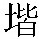

庚子送灶即事[846]
只鸡胶牙糖，典衣供瓣香。
家中无长物，岂独少黄羊！[847]
祭书神文[848]
上章困敦之岁[849]，贾子祭诗之夕[850]，会稽戛剑生等
谨以寒泉冷华，祀书神长恩[851]，而缀之以俚词曰：
今之夕兮除夕，香焰氤氲兮烛焰赤。钱神醉兮钱奴忙，君独何为兮守残籍？华筵开兮腊酒香，更点点兮夜长。人喧呼兮入醉乡，谁荐君兮一觞。绝交阿堵[852]兮尚剩残书，把酒大呼兮君临我居。缃旗兮芸舆，挈脉望兮驾鱼[853]。寒泉兮菊菹，狂诵《离骚》兮为君娱，君之来兮毋除除。君友漆妃兮管城侯[854]，向笔海而啸傲兮，倚文冢以淹留[855]。不妨导脉望而登仙兮，引鱼之来游。俗丁伧父兮为君仇，勿使履阈兮增君忧。若勿听兮止以吴钩[856]，示之《丘》《索》兮棘其喉[857]。令管城脱颖以出兮，使彼惙惙以心愁。宁召书癖兮来诗囚[858]，君为我守兮乐未休。他年芹茂而樨香兮[859]，购异籍以相酬。
和仲弟送别元韵并跋[860]
梦魂常向故乡驰，始信人间苦别离。
夜半倚床忆诸弟，残灯如豆月明时。
日暮舟停老圃家，棘篱绕屋树交加。
怅然回忆家乡乐，抱瓮何时共养花？[861]
春风容易送韶年，一棹烟波夜驶船。
何事脊令偏傲我，时随帆顶过长天！[862]
仲弟次予去春留别元韵三章，即以送别，并索和[863]。予每把笔，辄黯然而止。越十余日，客窗偶暇，潦草成句，即邮寄之。嗟乎！登楼陨涕[864]，英雄未必忘家；执手消魂[865]，兄弟竟居异地！深秋明月，照游子而更明；寒夜怨笳，遇羁人而增怨。此情此景，盖未有不悄然以悲者矣。
辛丑仲春戛剑生拟删草
惜花四律步湘州藏春园主人元韵[866]
鸟啼铃语梦常萦，闲立花阴盼嫩晴。[867]
怵目飞红随蝶舞，关心茸碧绕阶生。
天于绝代偏多妒，时至将离倍有情。
最是令人愁不解，四檐疏雨送秋声。
剧怜常逐柳绵飘，金屋何时贮阿娇？[868]
微雨欲来勤插棘，熏风有意不鸣条。[869]
莫教夕照催长笛，且踏春阳过板桥。[870]
祗恐新秋归塞雁，兰艭载酒桨轻摇。
细雨轻寒二月时，不缘红豆始相思。[871]
堕裀印屐增惆怅，插竹编篱好护持。[872]
慰我素心香袭袖，撩人蓝尾酒盈卮。[873]
奈何无赖春风至，深院荼已满枝。[874]
繁英绕甸竞呈妍，叶底闲看蛱蝶眠。
室外独留滋卉地，年来幸得养花天。[875]
文禽共惜春将去，秀野欣逢红欲然。
戏仿唐宫护佳种，金铃轻绾赤阑边。
注 释
[846] 本篇录自周作人日记所附《柑酒听鹂笔记》，署名戛剑生。原为句读。据周作人日记庚子十二月二十三日（1901年2月11日）载：“夜送灶，大哥作一绝送之。”
旧俗，以夏历十二月二十四日为灶神升天的日子，在这一天或前一天祭送灶神，称为“送灶”。
[847] 黄羊 《后汉书·阴识传》：“宣帝时阴子方者，至孝有仁恩。腊日晨炊而灶神形见，子方再拜受庆。家有黄羊，因以祀之。自是已后，暴至巨富，……故后常以腊日祀灶而荐黄羊焉。”据南朝梁宗懔《荆楚岁时记》，阴子方用以祭灶神的是“黄犬”。又《康熙会稽志》：绍俗，“祭灶品用糖糕、时果或羊首，取黄羊祭灶之义。”
[848] 本篇录自周作人日记所附《柑酒听鹂笔记》，署名戛剑生。原为句读。据周作人庚子除夕（1901年2月18日）日记载：“（夜）饭后，同豫才兄祭书神长恩，作文侑之。”
[849] 上章困敦之岁 指庚子年。《尔雅·释天》：“（太岁）在庚曰上章”，“（太岁）在子曰困敦。”
[850] 贾子 指唐代诗人贾岛。元代辛文房《唐才子传》卷五：“（贾岛）每至除夕，必取一岁所作置几上，焚香再拜，酹酒祝曰：‘此吾终年苦心也。’”
[851] 长恩 明代无名氏《致虚阁杂俎》：“司书鬼曰长恩，除夕呼其名而祭之，鼠不敢啮，蠹鱼不蛀。”
[852] 阿堵 原是晋代俗语，即“这个”。《晋书·王衍传》：“衍口未尝言钱，妇令婢以钱绕床下，衍晨起，不得出，呼婢曰：‘举却阿堵物。’”后人遂沿用为钱的别称。
[853] 脉望 传说中的仙虫。唐代段成式《酉阳杂俎续集·支诺皋中》引《仙经》说：“蠹鱼三食神仙字，则化为此物，名曰脉望。”鱼，蛀书虫。，蠹的古字。
[854] 漆妃 墨的别称。管城侯，笔的别称。
[855] 笔海 砚的别称。文冢，唐代文学家刘蜕埋稿处，这里指书丛。
[856] 吴钩 春秋时吴地出产的弯形的刀，后泛指锋利的刀剑。唐代李贺《南园》诗：“男儿何不带吴钩，收取关山五十州。”
[857] 《丘》《索》 即《九丘》、《八索》。汉代孔安国《〈尚书〉序》：“八卦之说，谓之《八索》，求其义也。九州之志，谓之《九丘》。丘，聚也，言九州所有，土地所生，风气所宜，皆聚此书也。《春秋左氏传》曰，楚左史倚相能读《三坟》、《五典》、《八索》、《九丘》，即为上世帝王遗书也。”
[858] 诗囚 苦吟不已，诗思窘迫的诗人。元代元好问《放言》诗有“郊岛两诗囚”句，郊、岛，指唐代诗人孟郊、贾岛。
[859] 芹茂而樨香 《诗经·鲁颂·泮水》：“思乐泮水，薄采其芹”。泮水为学宫中的水池，后人常用入泮、採芹比喻童生进学。樨即桂花。桂花飘香正是秋闱开科之时，后人常用折桂比喻秋闱中式。
[860] 本篇录自周作人日记，写于1901年4月初。原无标题。
[861] 抱瓮 《庄子·天地》：“子贡过汉阴，见一丈人，方将为圃畦。凿隧而入井，抱瓮而出灌。”
[862] 脊令 鸟名。《诗经·小雅·棠棣》：“脊令在原，兄弟急难。”过去常用它比喻兄弟友爱，急难相助。
[863] 周作人的送别诗作于辛丑正月二十五日（1901年3月15日），题为《送戛剑生往白 步别诸弟三首原韵》：
一片征帆逐雁驰，江干烟树已离离。
苍茫独立增惆怅，却忆联床话雨时。
小桥杨柳埜人家，酒入愁肠恨转加。
勺药不知离别苦，当

犹自发春花。家食于今又一年，羡人破浪泛楼船。
自惭鱼鹿终无就，欲拟灵均问昊天。
[864] 登楼陨涕 东汉王粲《登楼赋》：“悲旧乡之壅隔兮，涕横堕而弗禁。”
[865] 消魂 南朝宋江淹《别赋》：“黯然消魂者，唯别而已矣。”
[866] 本篇录自周作人日记所附《柑酒听鹂笔记》，署名汉真将军后裔。写于1901年初夏。周作人在其抄录稿的天头处注明：“都六先生（按即周作人）原本，戛剑生删改。圈点悉尊戛剑生改本。”第一首批注：“第一句原本；第二联原本，‘茸碧’原作‘新绿’；第末联原本，‘不解’原作‘绝处’，结句成语。”第三首批注：“首句原本；第二联原本。”
湘州藏春园主人，即林步青，湖南长沙人，寓居上海。他写的《惜花四律》刊于当时的《海上文社日录》。
[867] 铃语 五代王仁裕《开元天宝遗事》卷上：“（宁王）至春时，于后园中纫红丝为绳，密缀金铃，系于花梢之上。每有乌鹊翔集，则令园吏掣铃索以惊之。”
[868] 金屋贮阿娇 阿娇，汉武帝的陈皇后的名字。相传为汉代班固所作的《汉武故事》中说，武帝幼年时，长公主戏问他：“‘阿娇好不？’于是乃笑对曰：‘好！若得阿娇作妇，当作金屋贮之也。’”
[869] 插棘 宋代陆游《东湖新竹》诗：“插棘编篱谨护持，养成寒碧映沦漪。”不鸣条，汉代桓宽《盐铁论》：“太平之时，风不鸣条，雨不破块。”
[870] 长笛 古有笛曲名《梅花落》，唐代李白《与史郎中钦听黄鹤楼吹笛》诗：“黄鹤楼中吹玉笛，江城五月落梅花。”
[871] 红豆 又名相思子。唐代王维《相思》诗：“红豆生南国，春来发几枝。愿君多采撷，此物最相思。”
[872] 堕 《南史·范缜传》，范缜答竟陵王萧子良：“人生如树花同发，随风而堕。自有拂帘幌坠于茵席之上，自有关篱墙落于粪溷之中。”
[873] 素心 指素心兰。蓝尾，即蓝尾酒，亦作婪尾酒。隋代侯白《酒律》：“酒巡匝到末座者，连饮三杯，为婪尾酒。”
[874] 荼 蔷薇科花名，初夏开黄白色花。宋代王淇《春暮游小园》诗：“开到荼花事了”。
[875] 养花天 宋代僧仲殊《花品序》：“越中牡丹开时，……多有轻云微雨，谓之养花天。”